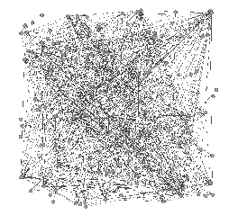
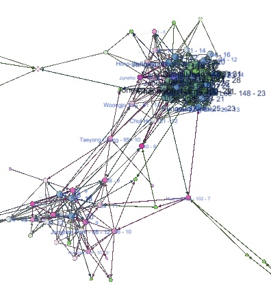

Python : Install Keras and Tensorflow
Keras is a Python library for deep learning modeling. If you are using Python 3.6 and Anaconda, you will face some troubles with installing Keras. This is due to Tensorflow required to be installed for Keras. You can find a way to install Tensorflow, here.
However, it is tricky to install Tensorflow into Python 3.6 despite this instruction.
Solution : We need Tensorflow 1.2 for Python 3.6.
In the Prompt, create a conda environment : conda create -n tensorflow
Download
tensorflow-1.2.0-cp36-cp36m-win_amd64.whl
After activating the Tensorflow in the prompt, pip install C:\ ..(the file location)..\tensorflow-1.2.0.....
Then, install Keras : pip install keras. Now, you can use Kreas in the Python 3.6.
Python : urllib.request.urlopen - HTTP error and solution
The server may try to block a bot
When you use urllib.request.uropen to scrape a webpage, you may get some HTTP errors. I suppose the server think you could be a bot and block your scraping.
Solution : We need to reset the browser user agent to avoid the blocking.
import urllib.request
url = 'http://..........'
req = urllib.request.Request(url, headers={'User-Agent': 'Mozilla/5.0'})
page = urllib.request.urlopen(req).read()
Now, you can scrape the webpage without error messages.
Sweave in R and Latex
Sweave is a good tool for R and Latex users. But, you may find an error message when you make your first tex file using Sweave.
"Sweave.sty not found."There is no package for Sweave.sty in MikTex. You can find the file in the R folder. C\..\R\share\texmf\tex
There are several ways to use this file in the folder. But, this is easy and efficient way.
First of all, find and clink 'mo' file in C\...MiKTex2.9\miktex\bin
Second, choose Roots tap.
Third, click add and choose C\....\R\share\texmf
That's all. Super easy!!!!
If you are looking for another option using R and Latex, I recommend R package knitr. It is convenient and you can make a good-looking document
Gephi : Solution to Java error
When you install or upgrade Gephi, your Gephi may not open and show an error message "Gephi cannot find Java 1.8 or higher"
To solve this issue, first of all find the location of Java in your computer. For my case, C:\Program Files (x86)\Java\jre1.8.0_144
Second, you need to find a file "gephi.conf" in the etc folder of Gephi
Third, open the file with notepad. Remove "#" before jdkhome=. Then, put the location of Java into after jdkhome=.
For example, jdkhome="C:/Program Files (x86)/Java/jre1.8.0_144"
Save the edited file and Run Gephi
Renaissance Network : Web crawling and Data Visualizing

You can find a tutorial video to create Renaissance Network in my Youtube channel. To make a data set for the network, I use R for scraping data and web crawling. Click Here.
You can download nodes data and edges data. R code can be found in here.
Visualizing Airline routes Network
In my Youtube channel, I uploaded a Gephi tutorial video to make Airline routes network. Click Here
You can download nodes data and links data.
Dynamic(Temporal) Network Gephi Tutorial
Data download : nodes data and edges data.
Dataset from Vanhems et al., 2013, Estimating Potential Infection Transmission Routes in Hospital Wards Using Wearable Proximity Sensors
Tutorial part 2 (Import with static files)
Data download : GEXF files
Dataset from Isella et al., 2011, What's in a crowd? Analysis of face-to-face behavioral networks
Visualizing Facebook Network
You can see my facebook network in the My Research tab of this website. You can visualize your own facebook network.
I use Gephi as a visualizing tool. It is an easy and convenient program. Download it.
In the facebook webpage, search netvizz which is a facebook application. Then, netvizz will show several options you can choose. Let's choose personal network. Then, in the next page, click start
netvizz makes two files. One is gdf file and the other one is tab file. Here, we need gdf file. Download it.
Open the file in Gephi. You will find chaotic dots and lines in your Gephi like the left figure. Our aim is visualizing the facebook network, not showing just dots and lines.
For a good-looking network, you can change color of nodes and links and its layout in Gephi. Use the left panel in Gephi.
When you change some of them, you can get better-looking facebook network. Now, play with your data
Facebook changed its policy on extracting data, so Netvizz does not work properly. Alternatively, we can use R package Rfacebook to extract data.
Understanding Netlogo Code
From Netlogo 6.0, "?" is not used anymore, and the R-extension bugs are hardly found.
More importantly, "Behavior search" is bundled with Netlogo.
I plan to make short tutorials for Behavior search, diverse experiments, optimizations and using Machine learning SOON.
reduce
'reduce' has a little bit complicating process.
show reduce [?1] [1 2 3] => 1
and show reduce [?2] [1 2 3] => 3 Now, what value can we get from
show reduce [?2] [1 2 3 4 5] ?
It will be 5.
'reduce' does the given task from left to right of the list. In the beginning, it finds the second value([?2]) from the first value of the list.
The first value in the list is 1 and the second value is also 1.
This is useful for coding math, like Σ Xi.
When X = [1,2,3,4,5],
Σ Xi can be rewritten as reduce + [1 2 3 4 5].
Max Xi can be expressed by reduce [ifelse-value (?1 > ?2) [?1] [?2]] [1 2 3 4 5] .
R-extension error and Solution
r-extension
r-extension is a very useful tool to connect Netlogo to R. We can use R in the Netlogo model with this extension. But, it is a little bit tricky to use it. I had some trouble with loading a package in the Netlogo. My error was that Netlogo could not load R package. Here are two solutions
Use R function : First of all, make a R function for your purpose. For example, my function is `mykurtosis'.
In the Netlogo, Type : let mykurtosis (word "source('C:/..path../mykurtosis.R')")
r:eval mykurtosis
Now, you can use your R function with your Netlogo model data
Change package Path : Type r:interactiveShell into NetLogo's Command Center.
In the interactiveShell, Type .libPaths()
Check the path for R package. If it is different from yours, do as follows :
In the Netlogo code, Type : r:put "path" "C:/...your R library path .../Documents/R/R-3.2/library"
r:eval ".libPaths(c(path,.libPaths()))"
Now, you can load your R package in the Netlogo.
RNetlogo error and Solution
RNetlogo
Another extension for R and Netlogo is RNetlogo. With this extension, we can use Netlogo in R interface.
But, you may find an error message, like WARNING: Could not open/create prefs root node Software\JavaSoft\Prefs at root 0x80000002....
Here is a solution
First, go to Start menu and type regedit
Login as the administrator, and find HKEY_LOCAL_MACHINE\Software\JavaSoft
Click right button of your mouse, and create key, Prefs. We need HKEY_LOCAL_MACHINE\Software\JavaSoft\Prefs .
Done!! Try it again. There will be no error.